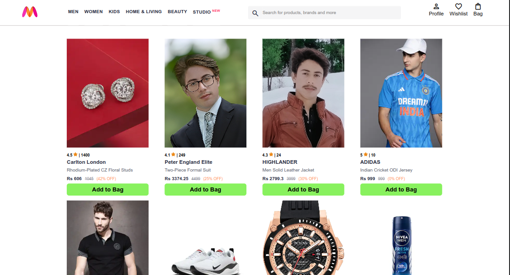
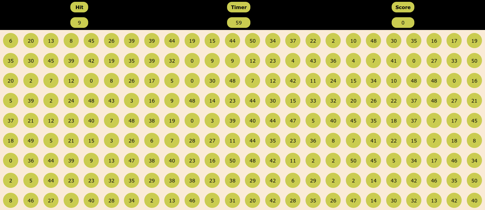
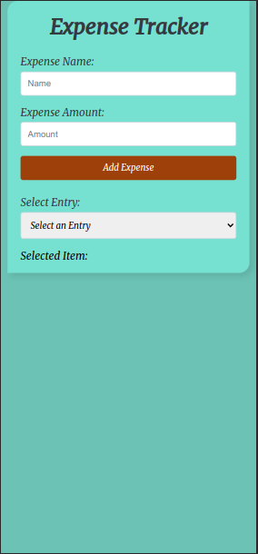
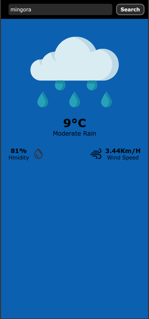
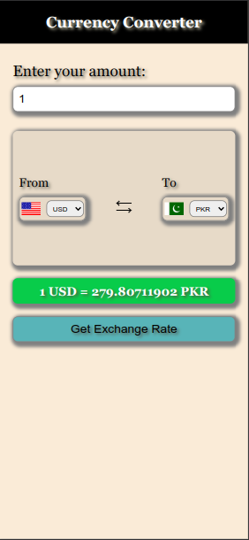

Immerse yourself in a seamlessly responsive redesign of the Amazon Home Page! Experience the familiar convenience of Amazon's interface, now optimized for various devices, from desktops to smartphones. This project showcases my skills in front-end development, ensuring a user-friendly experience across all screen sizes. Explore a modern, dynamic layout that adapts effortlessly to your device, providing an enhanced shopping experience. Explore the Amazon Home Page Responsive project.
Myntra Functional Clone
Experience the allure of online fashion with the Myntra Functional Clone! This project goes beyond the basics, offering an immersive shopping experience. Browse a rich assortment of products, from trendy apparel to stylish accessories. As you explore, add items to your bag, and seamlessly navigate to the Bag page for a detailed view of your selections. Dive into the intricacies of pricing and discounts, ensuring you make informed shopping decisions.

Explore the Myntra Functional Clone here and enjoy the convenience of virtual shopping with added features like a dynamic bag page and detailed pricing information.
Timeless Bonds: A Clock of Friendship
Celebrate the essence of friendship with this unique clock project! Immerse yourself in the nostalgic warmth of a clock adorned with the memories of true camaraderie. Watch time unfold through a blend of traditional clock hands and unconventional symbols, replacing the typical digits with letters that spell out "TRUE BLUE FRIEND." The background features a cherished photo of two best friends, making every passing second a reminder of the timeless bond they share. Additionally, enjoy the digital display showcasing the day, date, month, year, and both analog and digital time formats. Experience the magic of friendship with every passing moment.
Witness the magic of friendship through the clock here.
Tic Tac Toe Game
Challenge your strategic skills with this classic Tic Tac Toe game! Immerse yourself in the nostalgic thrill of Xs and Os as you face off against a friend or test your wits against a computer opponent. The simple yet engaging gameplay makes it perfect for quick matches or extended gaming sessions. Enjoy a clean and intuitive interface that enhances the overall gaming experience. Dive into the world of tactical moves and strategic victories. Will you emerge as the ultimate Tic Tac Toe champion?
Dive into the world of numbers with this interactive calculator project. Whether you're a student, professional, or just love crunching numbers, this calculator offers a sleek and user-friendly interface. Perform basic arithmetic operations with ease and experience the convenience of a modern digital calculator. Check it out to simplify your calculations and enhance your number-crunching experience.
Unleash your coding creativity with the Advanced Code Playground! This interactive web tool combines the power of the Monaco Editor with a live preview feature, allowing you to write, edit, and visualize your HTML code in real-time. Craft your web creations effortlessly in a sleek and customizable coding environment. The responsive design ensures a seamless experience, whether you're on a desktop or a mobile device. Experiment with different HTML snippets and witness the live output instantly. Dive into the world of coding with this dynamic and user-friendly Code Playground.
Dive into the fun and excitement of the Bubble Game! This interactive web game challenges your reflexes and observation skills. As bubbles float across the screen, your goal is to click on the one that matches the randomly generated "Hit" value. Keep an eye on the timer, as you have 60 seconds to score as many points as possible. Each correct hit earns you points and adds extra time to the clock.

Immerse yourself in the Bubble Game challenge now and test your quick thinking and precision. Try it out here and see how high you can score!
Expense Tracker
Manage your finances effortlessly with the Expense Tracker. This web application allows you to record your expenses on-the-go. Simply input the expense name and amount, and watch as the Tracker updates in real-time. Keep tabs on your spending habits, view a detailed list of expenses, and even select individual entries for a closer look. The Expense Tracker is a handy tool to maintain financial awareness and make informed budgeting decisions.

Give the Expense Tracker a try here and take control of your financial journey.
Weather Web App
Stay informed about the weather with the Weather Web App. This intuitive application provides real-time updates on the current weather conditions. Simply enter your location, and instantly access accurate details including temperature, humidity, wind speed. The app's clean and user-friendly interface ensures a seamless experience for users looking to stay ahead of the weather. Whether you're planning your day or just curious about the current climate, the Weather Web App is your go-to source for up-to-date weather information.

Check out the Weather Web App here and stay connected with the latest weather updates.
Currency Converter
Simplify your financial transactions with the Currency Converter. This web application allows you to effortlessly convert currencies and stay up-to-date with exchange rates. Enter the amount, select the source and target currencies, and instantly see the converted value. The Currency Converter supports a wide range of currencies, making it a versatile tool for travelers, investors, or anyone dealing with international transactions. Experience a straightforward and user-friendly interface, ensuring quick and accurate currency conversions at your fingertips.

Explore the Currency Converter here and streamline your currency exchange process with ease.
Ready to Discuss a Project?
Feel free to reach out and discuss your project ideas. I'm excited to hear from you!